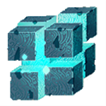
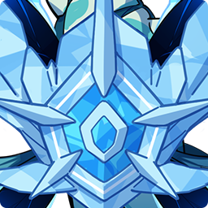
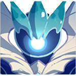
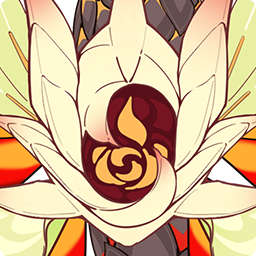
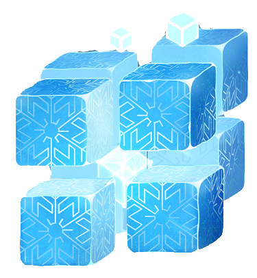

| Elementos del mapa | Nombre | Descripción |
|---|---|---|

|
Estatua de los 7 |
La estatua de los 7 es de las primeras cosas que nos muestran en el juego, estas pueden subir de nivel con los oculus y sirven para mejorar ciertas caracteristicas en el juego. |
|
Punto de teletransporte |
Los puntos de teletransporte sirven para teletransportarse a diferentes lugares del mapa y no estar mucho tiempo recorriendo el mapa. |
|
|
Dominios |
Los dominios son lugares en los que peleamos con enemigos para poder conseguir artefactos |
|
|
Árbol efímero |
Este árbol nos da diferentes recompensas al subirlo de nivel con los Ágata Escarlata . Lo podemos encontrar el ir a Espina dragón |
|
|
|
Estatua de los 7 |
La estatua de los 7 es de las primeras cosas que nos muestran en el juego, estas pueden subir de nivel con los oculus y sirven para mejorar ciertas caracteristicas en el juego. |
|
Anemóculus |
Sirven para poder subir de nivel a las estatuas que se encuentran en Mondstat, se encuentran a lo largo de esa misma nación. |
|
|
Geóculus |
Sirven para poder subir de nivel a las estatuas que se encuentran en Liyue, se encuentran a lo largo de esa misma nación. |
|
|
Ágata escarlata |
Sirven para poder subir de nivel el árbol efímero que se encuentra en Espina dragón, estas se encuentran a lo largo de estas montañas. |
|
|  |
Hypostasis Anemo |
En este lugar se encuentra el Boos Hypostasis anemo Si quieres leer más sobre él presiona aquí. |
|  |
Regisvid Cryo |
En este lugar se encuentra el Boos Regisvid Cryo Si quieres leer más sobre él presiona aquí. |

|
Rey Lobo Del norte Señor de los lobos |
En este lugar se encuentra el Rey Lobo Del Norte Si quieres leer más sobre él presiona aquí. |

|
Hypostasis Electro |
En este lugar se encuentra el Boos Hypostasis Electro Si quieres leer más sobre él presiona aquí. |
|  |
Oceánida |
En este lugar se encuentra el Boos Oceánida Si quieres leer más sobre él presiona aquí. |
|  |
Regisvid Pyro |
En este lugar se encuentra el Boos Regisvid Pyro Si quieres leer más sobre él presiona aquí. |

|
Hypostasis Geo |
En este lugar se encuentra el Boos Hypostasis Geo Si quieres leer más sobre él presiona aquí. |

|
Protodragarto Geo |
En este lugar se encuentra el Boos Protodragarto Geo Si quieres leer más sobre él presiona aquí. |
|  |
Hypostasis Cryo |
En este lugar se encuentra el Boos Hypostasis Cryo Si quieres leer más sobre él presiona aquí. |